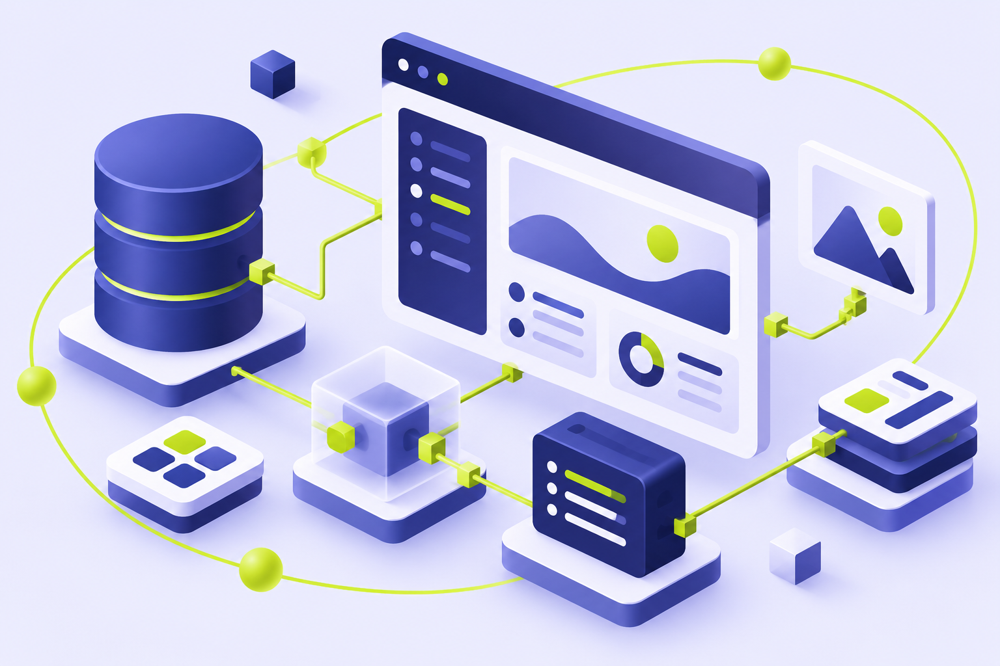

BUILD WITH US ↗
Custom software development
Software shaped around the way your business works. Discuss the workflows, integrations and requirements that matter.
Turn your requirements into custom software, web applications and business websites—with an India-based development partner for your next project.

Three clear starting points. Choose the work you need, then define the scope around your business.
Software shaped around the way your business works. Discuss the workflows, integrations and requirements that matter.
Bring a browser-based application or business portal into focus, from requirements to implementation.
Create a clear, useful business website with design and functionality considered together.
Begin with the people who will use your software, the work it needs to support, and the systems it needs to connect. Use those answers to define a practical scope.
A focused conversation first. Then an agreed plan that fits the work, your priorities and your team.
Discuss your business, your audience and what you want to change.
Set deliverables, responsibilities, dependencies and milestones.
Work through the agreed development priorities.
Agree acceptance criteria, prepare for handover and discuss ongoing support.
Whether you need a new application or a better website, tell us where you are today.
SEO and paid search are available as separate engagements or a next step after your website launches. Choose marketing when that is the work you need.
Discuss organic visibility, website priorities and a focused SEO engagement.
Discuss SEO ↗Discuss search campaigns, landing pages and how enquiries will be measured.
Discuss paid search ↗Yes. You can enquire about software development, website work, SEO or PPC separately. We can discuss a combined scope when your project needs it.
We welcome international enquiries. We’ll discuss meeting times, delivery milestones, payment terms and communication expectations when scoping your project.
A short description of your business, the problem you want to solve, your current website if you have one, and any budget or timing requirements are a useful start.
Yes. Share your website and what you want to improve. We can discuss design, development, search visibility and paid-search needs before recommending a scope.
Pricing depends on the scope, complexity and delivery requirements. For PPC, management fees and advertising spend should be discussed separately.
Share your business problem, the software or website you need, and any timing requirements. We’ll start with the scope.